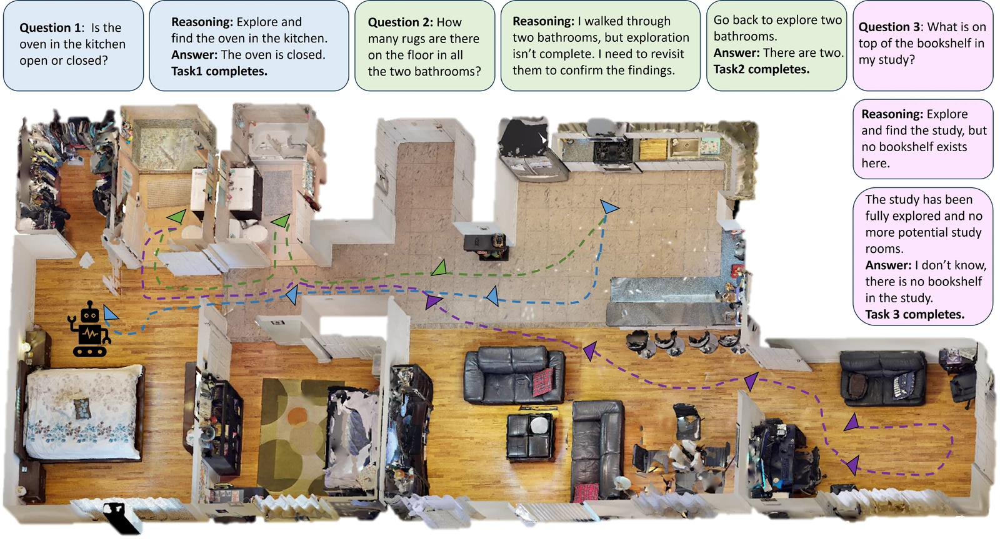
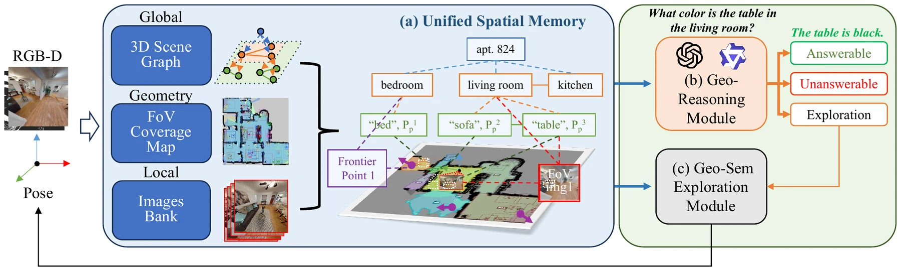

Embodied agents are expected to assist humans by actively exploring unknown environments and reasoning about spatial contexts. When deployed in real life, agents often face sequential tasks where each new task follows the completion of the previous one and may include infeasible objectives, such as searching for non-existent objects. However, most existing research focuses on isolated goals, overlooking the core challenge of sequential tasks: the ability to reuse spatial knowledge accumulated from previous explorations to guide subsequent reasoning and exploration.
We propose 3DSPMR, a 3D SPatial Memory Reasoning framework that uses Field-of-View (FoV) coverage as an explicit geometric prior. We further introduce SEER-Bench, a Sequential Embodied Exploration and Reasoning Benchmark spanning Embodied Question Answering (EQA) and Embodied Multi-modal Navigation (EMN), which uniquely incorporates both feasible and infeasible tasks.
3DSPMR keeps one spatial memory across the whole episode and reads Field-of-View coverage out of it, so “I have already looked there” becomes a geometric fact rather than a guess.

One episode of SEER-Bench is five questions in a row over one apartment, sharing one map and one step budget. Three episodes are replayed below — a small, a middle and a large environment — each with every method running side by side, the trajectory coloured by which question was active. All three stop at the first 100 steps and advance at the same rate, so the panels are directly comparable: the question is what each method has answered by then.
The separation grows with floor area. 3DSPMR explores once and then reads the later answers out of the map it already built, so most of the questions after the first cost it a single step — which is worth more the larger the floor plan. The infeasible questions sit at different places in each episode (3 & 5, 2 & 4, 4 & 5) and none of them comes first. Three episodes are shown; the aggregate is in the paper.
Three matched pairs from the EQA track of SEER-Bench, each pairing a feasible task with its infeasible counterpart under a controlled change. Each video replays all four views side by side. Both runs advance at the same rate — one step every two frames, the same everywhere on this page — so the shorter run simply finishes first and holds at its last position while the longer one keeps exploring.
The same framework on a Boston Dynamics Spot in a real lab — no simulator, no pre-built map. Four tasks arrive one after another and share a single spatial memory the robot builds as it walks. The fourth asks for an object that is not in the room; 3DSPMR answers it by reading its own FoV coverage, not by guessing.
@inproceedings{cai2026vision,
title = {Vision to Geometry: 3D Spatial Memory for Sequential
Embodied MLLM Reasoning and Exploration},
author = {Cai, Zhongyi and Du, Yi and Wang, Chen and Kong, Yu},
booktitle = {Advances in Neural Information Processing Systems},
year = {2026}
}